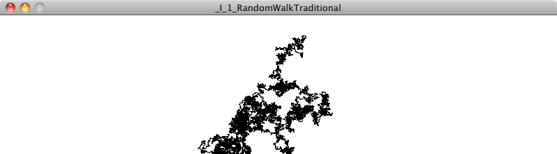
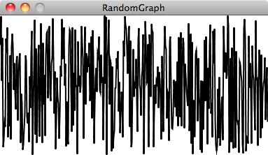
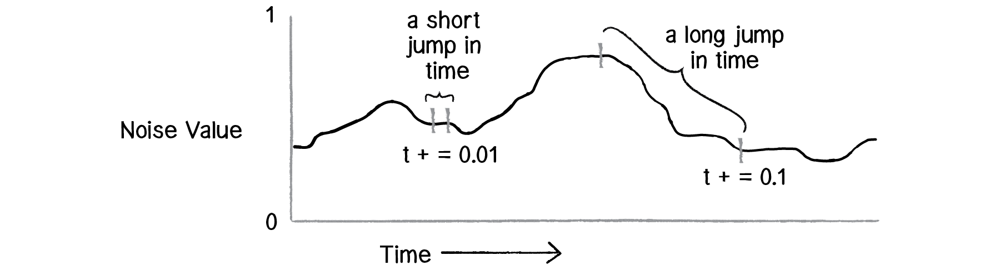
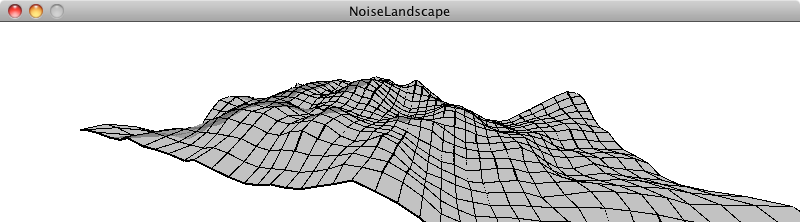

Here we are: the beginning. Well, almost the beginning. If it’s been a while since you’ve done any programming in Processing (or any math, for that matter), this introduction will get your mind back into computational thinking before we approach some of the more difficult and complex material.
In Chapter 1, we’re going to talk about the concept of a vector and how it will serve as the building block for simulating motion throughout this book. But before we take that step, let’s think about what it means for something to simply move around the screen. Let’s begin with one of the best-known and simplest simulations of motion—the random walk.
I.1 Random Walks
Imagine you are standing in the middle of a balance beam. Every ten seconds, you flip a coin. Heads, take a step forward. Tails, take a step backward. This is a random walk—a path defined as a series of random steps. Stepping off that balance beam and onto the floor, you could perform a random walk in two dimensions by flipping that same coin twice with the following results:
Flip 1
Flip 2
Result
Heads
Heads
Step forward.
Heads
Tails
Step right.
Tails
Heads
Step left.
Tails
Tails
Step backward.
Yes, this may seem like a particularly unsophisticated algorithm. Nevertheless, random walks can be used to model phenomena that occur in the real world, from the movements of molecules in a gas to the behavior of a gambler spending a day at the casino. As for us, we begin this book studying a random walk with three goals in mind.
We need to review a programming concept central to this book—object-oriented programming. The random walker will serve as a template for how we will use object-oriented design to make things that move around a Processing window.
The random walk instigates the two questions that we will ask over and over again throughout this book: “How do we define the rules that govern the behavior of our objects?” and then, “How do we implement these rules in Processing?”
Throughout the book, we’ll periodically need a basic understanding of randomness, probability, and Perlin noise. The random walk will allow us to demonstrate a few key points that will come in handy later.
I.2 The Random Walker Class
Let’s review a bit of object-oriented programming (OOP) first by building a (.*?) object. This will be only a cursory review. If you have never worked with OOP before, you may want something more comprehensive; I’d suggest stopping here and reviewing the basics on the Processing website before continuing.
An object in Processing is an entity that has both data and functionality. We are looking to design a (.*?) object that both keeps track of its data (where it exists on the screen) and has the capability to perform certain actions (such as draw itself or take a step).
A class is the template for building actual instances of objects. Think of a class as the cookie cutter; the objects are the cookies themselves.
Let’s begin by defining the (.*?) class—what it means to be a (.*?) object. The (.*?) only needs two pieces of data—a number for its x-location and one for its y-location.
class Walker {
//[full] Objects have data.
int x;
int y;
//[end]
Every class must have a constructor, a special function that is called when the object is first created. You can think of it as the object’s (.*?). There, we’ll initialize the (.*?)’s starting location (in this case, the center of the window).
//[full] Objects have a constructor where they are initialized.
Walker() {
x = width/2;
y = height/2;
}
//[end]
Finally, in addition to data, classes can be defined with functionality. In this example, a (.*?) has two functions. We first write a function that allows the object to display itself (as a black dot).
The second function directs the (.*?) object to take a step. Now, this is where things get a bit more interesting. Remember that floor on which we were taking random steps? Well, now we can use a Processing window in that same capacity. There are four possible steps. A step to the right can be simulated by incrementing (.*?) ((.*?)++); to the left by decrementing (.*?) ((.*?)); forward by going down a pixel ((.*?)); and backward by going up a pixel ((.*?)). How do we pick from these four choices? Earlier we stated that we could flip two coins. In Processing, however, when we want to randomly choose from a list of options, we can pick a random number using (.*?).
void step() {
// 0, 1, 2, or 3
int choice = int(random(4));
The above line of code picks a random floating point number between 0 and 4 and converts it to an integer, with a result of 0, 1, 2, or 3. Technically speaking, the highest number will never be 4.0, but rather 3.999999999 (with as many 9s as there are decimal places); since the process of converting to an integer lops off the decimal place, the highest (.*?) we can get is 3. Next, we take the appropriate step (left, right, up, or down) depending on which random number was picked.
//[full] The random “choice” determines our step.
if (choice == 0) {
x++;
} else if (choice == 1) {
x--;
} else if (choice == 2) {
y++;
} else {
y--;
}
//[end]
}
}
Now that we’ve written the class, it’s time to make an actual (.*?) object in the main part of our sketch—(.*?) and (.*?). Assuming we are looking to model a single random walk, we declare one global variable of type (.*?).
// A Walker object
Walker w;
Then we create the object in (.*?) by calling the constructor with the (.*?) operator.
Example I.1: Traditional random walk
Each time you see the above Example heading in this book, it means there is a corresponding code example available on GitHub.
void setup() {
size(640,360);
// Create the Walker.
w = new Walker(); //[bold]
background(255);
}
Finally, during each cycle through (.*?), we ask the (.*?) to take a step and draw a dot.
void draw() {
//[full] Call functions on the Walker.
w.step(); //[bold]
w.display(); //[bold]
//[end]
}
Since we only draw the background once in (.*?), rather than clearing it continually each time through (.*?), we see the trail of the random walk in our Processing window.

There are a couple improvements we could make to the random walker. For one, this (.*?)’s step choices are limited to four options—up, down, left, and right. But any given pixel in the window has eight possible neighbors, and a ninth possibility is to stay in the same place.
To implement a (.*?) object that can step to any neighboring pixel (or stay put), we could pick a number between 0 and 8 (nine possible choices). However, a more efficient way to write the code would be to simply pick from three possible steps along the x-axis (-1, 0, or 1) and three possible steps along the y-axis.
void step() {
//[full] Yields -1, 0, or 1
int xstep = int(random(3))-1;
int ystep = int(random(3))-1;
//[end]
x += xstep;
y += ystep;
}
Taking this further, we could use floating point numbers (i.e. decimal numbers) for (.*?) and (.*?) instead and move according to an arbitrary random value between -1 and 1.
void step() {
//[full] Yields any floating point number between -1.0 and 1.0
float xstep = random(-1, 1);
float ystep = random(-1, 1);
//[end]
x += xstep;
y += ystep;
}
All of these variations on the “traditional” random walk have one thing in common: at any moment in time, the probability that the (.*?) will take a step in a given direction is equal to the probability that the (.*?) will take a step in any direction. In other words, if there are four possible steps, there is a 1 in 4 (or 25%) chance the (.*?) will take any given step. With nine possible steps, it’s a 1 in 9 (or 11.1%) chance.
Conveniently, this is how the (.*?) function works. Processing’s random number generator (which operates behind the scenes) produces what is known as a “uniform” distribution of numbers. We can test this distribution with a Processing sketch that counts each time a random number is picked and graphs it as the height of a rectangle.
Example I.2: Random number distribution
// An array to keep track of how often random numbers are picked
int[] randomCounts;
void setup() {
size(640,240);
randomCounts = new int[20];
}
void draw() {
background(255);
// Pick a random number and increase the count.
int index = int(random(randomCounts.length));
randomCounts[index]++;
stroke(0);
fill(175);
int w = width/randomCounts.length;
//[full] Graphing the results
for (int x = 0; x < randomCounts.length; x++) {
rect(x*w,height-randomCounts[x],w-1,randomCounts[x]);
}
//[end]
}
The above screenshot shows the result of the sketch running for a few minutes. Notice how each bar of the graph differs in height. Our sample size (i.e. the number of random numbers we’ve picked) is rather small and there are some occasional discrepancies, where certain numbers are picked more often. Over time, with a good random number generator, this would even out.
Pseudo-Random Numbers
The random numbers we get from the (.*?) function are not truly random; therefore they are known as “pseudo-random.” They are the result of a mathematical function that simulates randomness. This function would yield a pattern over time, but that time period is so long that for us, it’s just as good as pure randomness!
Exercise I.1
Create a random walker that has a tendency to move down and to the right. (We’ll see the solution to this in the next section.)
I.3 Probability and Non-Uniform Distributions
Remember when you first started programming in Processing? Perhaps you wanted to draw a lot of circles on the screen. So you said to yourself: “Oh, I know. I’ll draw all these circles at random locations, with random sizes and random colors.” In a computer graphics system, it’s often easiest to seed a system with randomness. In this book, however, we’re looking to build systems modeled on what we see in nature. Defaulting to randomness is not a particularly thoughtful solution to a design problem—in particular, the kind of problem that involves creating an organic or natural-looking simulation.
With a few tricks, we can change the way we use (.*?) to produce “non-uniform” distributions of random numbers. This will come in handy throughout the book as we look at a number of different scenarios. When we examine genetic algorithms, for example, we’ll need a methodology for performing “selection”—which members of our population should be selected to pass their DNA to the next generation? Remember the concept of survival of the fittest? Let’s say we have a population of monkeys evolving. Not every monkey will have a equal chance of reproducing. To simulate Darwinian evolution, we can’t simply pick two random monkeys to be parents. We need the more “fit” ones to be more likely to be chosen. We need to define the “probability of the fittest.” For example, a particularly fast and strong monkey might have a 90% chance of procreating, while a weaker one has only a 10% chance.
Let’s pause here and take a look at probability’s basic principles. First we’ll examine single event probability, i.e. the likelihood that a given event will occur.
If you have a system with a certain number of possible outcomes, the probability of the occurrence of a given event equals the number of outcomes that qualify as that event divided by the total number of all possible outcomes. A coin toss is a simple example—it has only two possible outcomes, heads or tails. There is only one way to flip heads. The probability that the coin will turn up heads, therefore, is one divided by two: 1/2 or 50%.
Take a deck of fifty-two cards. The probability of drawing an ace from that deck is:
number of aces / number of cards = 4 / 52 = 0.077 = ~ 8%
The probability of drawing a diamond is:
number of diamonds / number of cards = 13 / 52 = 0.25 = 25%
We can also calculate the probability of multiple events occurring in sequence. To do this, we simply multiply the individual probabilities of each event.
The probability of a coin turning up heads three times in a row is:
(1/2) * (1/2) * (1/2) = 1/8 (or 0.125)
…meaning that a coin will turn up heads three times in a row one out of eight times (each “time” being three tosses).
Exercise I.2
What is the probability of drawing two aces in a row from a deck of fifty-two cards?
There are a couple of ways in which we can use the (.*?) function with probability in code. One technique is to fill an array with a selection of numbers—some of which are repeated—then choose random numbers from that array and generate events based on those choices.
int[] stuff = new int[5];
//[full] 1 is stored in the array twice, making it more likely to be picked.
stuff[0] = 1;
stuff[1] = 1;
//[end]
stuff[2] = 2;
stuff[3] = 3;
stuff[4] = 3;
// Picking a random element from an array
int index = int(random(stuff.length));
Running this code will produce a 40% chance of printing the value 1, a 20% chance of printing 2, and a 40% chance of printing 3.
We can also ask for a random number (let’s make it simple and just consider random floating point values between 0 and 1) and allow an event to occur only if our random number is within a certain range. For example:
// A probability of 10%
float prob = 0.10;
// A random floating point value between 0 and 1
float r = random(1);
//[full] If our random number is less than 0.1, try again!
if (r < prob) {
[inline]// try again!
}
//[end]
This method can also be applied to multiple outcomes. Let’s say that Outcome A has a 60% chance of happening, Outcome B, a 10% chance, and Outcome C, a 30% chance. We implement this in code by picking a random float and seeing into what range it falls.
between 0.00 and 0.60 (60%) –> Outcome A
between 0.60 and 0.70 (10%) –> Outcome B
between 0.70 and 1.00 (30%) –> Outcome C
float num = random(1);
// If random number is less than 0.6
if (num < 0.6) {
println("Outcome A");
// Between 0.6 and 0.7
} else if (num < 0.7) {
println("Outcome B");
// Greater than 0.7
} else {
println("Outcome C");
}
We could use the above methodology to create a random walker that tends to move to the right. Here is an example of a (.*?) with the following probabilities:
chance of moving up: 20%
chance of moving down: 20%
chance of moving left: 20%
chance of moving right: 40%
Example I.3: Walker that tends to move to the right
void step() {
float r = random(1);
//[full] A 40% chance of moving to the right!
if (r < 0.4) {
x++;
//[end]
} else if (r < 0.6) {
x--;
} else if (r < 0.8) {
y++;
} else {
y--;
}
}
Exercise I.3
Create a random walker with dynamic probabilities. For example, can you give it a 50% chance of moving in the direction of the mouse?
I.4 A Normal Distribution of Random Numbers
Let’s go back to that population of simulated Processing monkeys. Your program generates a thousand Monkey objects, each with a height value between 200 and 300 (as this is a world of monkeys that have heights between 200 and 300 pixels).
float h = random(200,300);
Does this accurately depict the heights of real-world beings? Think of a crowded sidewalk in New York City. Pick any person off the street and it may appear that their height is random. Nevertheless, it’s not the kind of random that (.*?) produces. People’s heights are not uniformly distributed; there are a great deal more people of average height than there are very tall or very short ones. To simulate nature, we may want it to be more likely that our monkeys are of average height (250 pixels), yet still allow them to be, on occasion, very short or very tall.
A distribution of values that cluster around an average (referred to as the “mean”) is known as a “normal” distribution. It is also called the Gaussian distribution (named for mathematician Carl Friedrich Gauss).
When you graph the distribution, you get something that looks like the following, informally known as a bell curve:
The curve is generated by a mathematical function that defines the probability of any given value occurring as a function of the mean (often written as μ, the Greek letter mu) and standard deviation (σ, the Greek letter sigma).
The mean is pretty easy to understand. In the case of our height values between 200 and 300, you probably have an intuitive sense of the mean (i.e. average) as 250. However, what if I were to say that the standard deviation is 3 or 15? What does this mean for the numbers? The graphs above should give us a hint. The graph on the left shows us the distribution with a very low standard deviation, where the majority of the values cluster closely around the mean. The graph on the right shows us a higher standard deviation, where the values are more evenly spread out from the average.
The numbers work out as follows: Given a population, 68% of the members of that population will have values in the range of one standard deviation from the mean, 98% within two standard deviations, and 99.7% within three standard deviations. Given a standard deviation of 5 pixels, only 0.3% of the monkey heights will be less than 235 pixels (three standard deviations below the mean of 250) or greater than 265 pixels (three standard deviations above the mean of 250).
Calculating Mean and Standard Deviation
Consider a class of ten students who receive the following scores (out of 100) on a test:
85, 82, 88, 86, 85, 93, 98, 40, 73, 83
The mean is the average: 81.3
The standard deviation is calculated as the square root of the average of the squares of deviations around the mean. In other words, take the difference from the mean for each person and square it (variance). Calculate the average of all these values and take the square root as the standard deviation.
Score
Difference from Mean
Variance
Average Variance:
254.23
85
85-81.3 = 3.7
(3.7)2 = 13.69
40
40-81.3 = -41.3
(-41.3)2 = 1705.69
etc.
The standard deviation is the square root of the average variance: 15.94
Luckily for us, to use a normal distribution of random numbers in a Processing sketch, we don’t have to do any of these calculations ourselves. Instead, we can make use of a class known as (.*?), which we get for free as part of the default Java libraries imported into Processing (see the JavaDocs for more information).
To use the (.*?) class, we must first declare a variable of type (.*?) and create the (.*?) object in (.*?).
// We use the variable name “generator” because what we
// have here can be thought of as a random number generator.
Random generator;
void setup() {
size(640,360);
generator = new Random();
}
If we want to produce a random number with a normal (or Gaussian) distribution each time we run through (.*?), it’s as easy as calling the function (.*?).
void draw() {
// Asking for a Gaussian random number. (Note nextGaussian() returns a double and must be converted to float.)
float num = (float) generator.nextGaussian();
}
Here’s the thing. What are we supposed to do with this value? What if we wanted to use it, for example, to assign the x-position of a shape we draw on screen?
The (.*?) function returns a normal distribution of random numbers with the following parameters: a mean of zero and a standard deviation of one. Let’s say we want a mean of 320 (the center horizontal pixel in a window of width 640) and a standard deviation of 60 pixels. We can adjust the value to our parameters by multiplying it by the standard deviation and adding the mean.
Example I.4: Gaussian distribution
void draw() {
// Note that nextGaussian() returns a double.
float num = (float) generator.nextGaussian();
float sd = 60;
float mean = 320;
// Multiply by the standard deviation and add the mean.
float x = sd * num + mean;
noStroke();
fill(0,10);
ellipse(x,180,16,16);
}
By drawing the ellipses on top of each other with some transparency, we can actually see the distribution. The darkest spot is near the center, where most of the values cluster, but every so often circles are drawn farther to the right or left of the center.
Exercise I.4
Consider a simulation of paint splatter drawn as a collection of colored dots. Most of the paint clusters around a central location, but some dots do splatter out towards the edges. Can you use a normal distribution of random numbers to generate the locations of the dots? Can you also use a normal distribution of random numbers to generate a color palette?
Exercise I.5
A Gaussian random walk is defined as one in which the step size (how far the object moves in a given direction) is generated with a normal distribution. Implement this variation of our random walk.
I.5 A Custom Distribution of Random Numbers
There will come a time in your life when you do not want a uniform distribution of random values, or a Gaussian one. Let’s imagine for a moment that you are a random walker in search of food. Moving randomly around a space seems like a reasonable strategy for finding something to eat. After all, you don’t know where the food is, so you might as well search randomly until you find it. The problem, as you may have noticed, is that random walkers return to previously visited locations many times (this is known as “oversampling”). One strategy to avoid such a problem is to, every so often, take a very large step. This allows the walker to forage randomly around a specific location while periodically jumping very far away to reduce the amount of oversampling. This variation on the random walk (known as a Lévy flight) requires a custom set of probabilities. Though not an exact implementation of a Lévy flight, we could state the probability distribution as follows: the longer the step, the less likely it is to be picked; the shorter the step, the more likely.
Earlier in this prologue, we saw that we could generate custom probability distributions by filling an array with values (some duplicated so that they would be picked more frequently) or by testing the result of (.*?). We could implement a Lévy flight by saying that there is a 1% chance of the walker taking a large step.
float r = random(1);
//[full] A 1% chance of taking a large step
if (r < 0.01) {
xstep = random(-100,100);
ystep = random(-100,100);
//[end]
} else {
xstep = random(-1,1);
ystep = random(-1,1);
}
However, this reduces the probabilities to a fixed number of options. What if we wanted to make a more general rule—the higher a number, the more likely it is to be picked? 3.145 would be more likely to be picked than 3.144, even if that likelihood is just a tiny bit greater. In other words, if (.*?) is the random number, we could map the likelihood on the y-axis with (.*?) = (.*?).
If we can figure out how to generate a distribution of random numbers according to the above graph, then we will be able to apply the same methodology to any curve for which we have a formula.
One solution is to pick two random numbers instead of one. The first random number is just that, a random number. The second one, however, is what we’ll call a “qualifying random value.” It will tell us whether to use the first one or throw it away and pick another one. Numbers that have an easier time qualifying will be picked more often, and numbers that rarely qualify will be picked infrequently. Here are the steps (for now, let’s consider only random values between 0 and 1):
Pick a random number: R1
Compute a probability P that R1 should qualify. Let’s try: P = R1.
Pick another random number: R2
If R2 is less than P, then we have found our number—R1!
If R2 is not less than P, go back to step 1 and start over.
Here we are saying that the likelihood that a random value will qualify is equal to the random number itself. Let’s say we pick 0.1 for R1. This means that R1 will have a 10% chance of qualifying. If we pick 0.83 for R1 then it will have a 83% chance of qualifying. The higher the number, the greater the likelihood that we will actually use it.
Here is a function (named for the accept-reject algorithm, a type of Monte Carlo method, which was named for the Monte Carlo casino) that implements the above algorithm, returning a random value between 0 and 1.
float acceptreject() {
// We do this “forever” until we find a qualifying random value.
while (true) {
// Pick a random value.
float r1 = random(1);
// Assign a probability.
float probability = r1;
// Pick a second random value.
float r2 = random(1);
//[full] Does it qualify? If so, we’re done!
if (r2 < probability) {
return r1;
}
//[end]
}
}
Exercise I.6
Use a custom probability distribution to vary the size of a step taken by the random walker. The step size can be determined by influencing the range of values picked. Can you map the probability exponentially—i.e. making the likelihood that a value is picked equal to the value squared?
// A uniform distribution of step sizes. Change this!
float stepsize = random(0,10);
float stepx = random(-stepsize,stepsize);
float stepy = random(-stepsize,stepsize);
x += stepx;
y += stepy;
(Later we’ll see how to do this more efficiently using vectors.)
I.6 Perlin Noise (A Smoother Approach)
A good random number generator produces numbers that have no relationship and show no discernible pattern. As we are beginning to see, a little bit of randomness can be a good thing when programming organic, lifelike behaviors. However, randomness as the single guiding principle is not necessarily natural. An algorithm known as “Perlin noise,” named for its inventor Ken Perlin, takes this concept into account. Perlin developed the noise function while working on the original Tron movie in the early 1980s; it was designed to create procedural textures for computer-generated effects. In 1997 Perlin won an Academy Award in technical achievement for this work. Perlin noise can be used to generate various effects with natural qualities, such as clouds, landscapes, and patterned textures like marble.
Perlin noise has a more organic appearance because it produces a naturally ordered (“smooth”) sequence of pseudo-random numbers. The graph on the left below shows Perlin noise over time, with the x-axis representing time; note the smoothness of the curve. The graph on the right shows pure random numbers over time. (The code for generating these graphs is available in the accompanying book downloads.)

Processing has a built-in implementation of the Perlin noise algorithm: the function (.*?). The (.*?) function takes one, two, or three arguments, as noise is computed in one, two, or three dimensions. Let’s start by looking at one-dimensional noise.
Noise Detail
The Processing noise reference tells us that noise is calculated over several “octaves.” Calling the noiseDetail() function will change both the number of octaves and their importance relative to one another. This in turn changes how the noise function behaves.
An online lecture by Ken Perlin lets you learn more about how noise works from Perlin himself.
Consider drawing a circle in our Processing window at a random x-location.
// A random x-location
float x = random(0,width);
ellipse(x,180,16,16);
Now, instead of a random x-location, we want a Perlin noise x-location that is “smoother.” You might think that all you need to do is replace (.*?) with (.*?), i.e.
// A noise x-location?
float x = noise(0,width); //[line-through]
While conceptually this is exactly what we want to do—calculate an x-value that ranges between 0 and the width according to Perlin noise—this is not the correct implementation. While the arguments to the (.*?) function specify a range of values between a minimum and a maximum, (.*?) does not work this way. Instead, the output range is fixed—it always returns a value between 0 and 1. We’ll see in a moment that we can get around this easily with Processing’s (.*?) function, but first we must examine what exactly (.*?) expects us to pass in as an argument.
We can think of one-dimensional Perlin noise as a linear sequence of values over time. For example:
Time
Noise Value
0
0.365
1
0.363
2
0.363
3
0.364
4
0.366
Now, in order to access a particular noise value in Processing, we have to pass a specific "moment in time" to the (.*?) function. For example:
float n = noise(3);
According to the above table, (.*?) will return 0.364 at time equals 3. We could improve this by using a variable for time and asking for a noise value continuously in (.*?).
float t = 3;
void draw() {
// We need the noise value for a specific moment in time.
float n = noise(t);
println(n);
}
The above code results in the same value printed over and over. This happens because we are asking for the result of the (.*?) function at the same point in time—3—over and over. If we increment the time variable (.*?), however, we’ll get a different result.
// Typically we would start at time = 0, though this is arbitrary.
float t = 0;
void draw() {
float n = noise(t);
println(n);
// Now, we move forward in time!
t += 0.01;
}
How quickly we increment (.*?) also affects the smoothness of the noise. If we make large jumps in time, then we are skipping ahead and the values will be more random.

Try running the code several times, incrementing (.*?) by 0.01, 0.02, 0.05, 0.1, 0.0001, and you will see different results.
Mapping Noise
Now we’re ready to answer the question of what to do with the noise value. Once we have the value with a range between 0 and 1, it’s up to us to map that range to what we want. The easiest way to do this is with Processing’s (.*?) function. The (.*?) function takes five arguments. First up is the value we want to map, in this case (.*?). Then we have to give it the value’s current range (minimum and maximum), followed by our desired range.
In this case, we know that noise has a range between 0 and 1, but we’d like to draw our circle with a range between 0 and the window’s width.
float t = 0;
void draw() {
float n = noise(t);
// Using map() to customize the range of Perlin noise
float x = map(n,0,1,0,width);
ellipse(x,180,16,16);
t += 0.01;
}
We can apply the exact same logic to our random walker, and assign both its x- and y-values according to Perlin noise.
Example I.5: Perlin noise walker
class Walker {
float x,y;
float tx,ty;
Walker() {
tx = 0;
ty = 10000;
}
void step() {
//[full] x- and y-location mapped from noise
x = map(noise(tx), 0, 1, 0, width);
y = map(noise(ty), 0, 1, 0, height);
//[end]
//[full] Move forward through “time.”
tx += 0.01;
ty += 0.01;
//[end]
}
}
Notice how the above example requires an additional pair of variables: (.*?) and (.*?). This is because we need to keep track of two time variables, one for the x-location of the (.*?) object and one for the y-location. But there is something a bit odd about these variables. Why does (.*?) start at 0 and (.*?) at 10,000? While these numbers are arbitrary choices, we have very specifically initialized our two time variables with different values. This is because the noise function is deterministic: it gives you the same result for a specific time (.*?) each and every time. If we asked for the noise value at the same time (.*?) for both (.*?) and (.*?), then (.*?) and (.*?) would always be equal, meaning that the (.*?) object would only move along a diagonal. Instead, we simply use two different parts of the noise space, starting at 0 for (.*?) and 10,000 for (.*?) so that (.*?) and (.*?) can appear to act independently of each other.
In truth, there is no actual concept of time at play here. It’s a useful metaphor to help us understand how the noise function works, but really what we have is space, rather than time. The graph above depicts a linear sequence of noise values in a one-dimensional space, and we can ask for a value at a specific x-location whenever we want. In examples, you will often see a variable named (.*?) to indicate the x-offset along the noise graph, rather than (.*?) for time (as noted in the diagram).
Exercise I.7
In the above random walker, the result of the noise function is mapped directly to the (.*?)’s location. Create a random walker where you instead map the result of the (.*?) function to a (.*?)’s step size.
Two-Dimensional Noise
This idea of noise values living in a one-dimensional space is important because it leads us right into a discussion of two-dimensional space. Let’s think about this for a moment. With one-dimensional noise, we have a sequence of values in which any given value is similar to its neighbor. Because the value is in one dimension, it only has two neighbors: a value that comes before it (to the left on the graph) and one that comes after it (to the right).
Two-dimensional noise works exactly the same way conceptually. The difference of course is that we aren’t looking at values along a linear path, but values that are sitting on a grid. Think of a piece of graph paper with numbers written into each cell. A given value will be similar to all of its neighbors: above, below, to the right, to the left, and along any diagonal.
If you were to visualize this graph paper with each value mapped to the brightness of a color, you would get something that looks like clouds. White sits next to light gray, which sits next to gray, which sits next to dark gray, which sits next to black, which sits next to dark gray, etc.
This is why noise was originally invented. You tweak the parameters a bit or play with color to make the resulting image look more like marble or wood or any other organic texture.
Let’s take a quick look at how to implement two-dimensional noise in Processing. If you wanted to color every pixel of a window randomly, you would need a nested loop, one that accessed each pixel and picked a random brightness.
loadPixels();
for (int x = 0; x < width; x++) {
for (int y = 0; y < height; y++) {
// A random brightness!
float bright = random(255);
pixels[x+y*width] = color(bright);
}
}
updatePixels();
To color each pixel according to the (.*?) function, we’ll do exactly the same thing, only instead of calling (.*?) we’ll call (.*?).
// A Perlin noise brightness!
float bright = map(noise(x,y),0,1,0,255); //[bold]
This is a nice start conceptually—it gives you a noise value for every ((.*?),(.*?)) location in our two-dimensional space. The problem is that this won’t have the cloudy quality we want. Jumping from pixel 200 to pixel 201 is too large of a jump through noise. Remember, when we worked with one-dimensional noise, we incremented our time variable by 0.01 each frame, not by 1! A pretty good solution to this problem is to just use different variables for the noise arguments. For example, we could increment a variable called (.*?) each time we move horizontally, and a (.*?) variable each time we move vertically through the nested loops.
Example I.6: 2D Perlin noise
// Start xoff at 0.
float xoff = 0.0; //[bold]
for (int x = 0; x < width; x++) {
// For every xoff, start yoff at 0.
float yoff = 0.0; //[bold]
for (int y = 0; y < height; y++) {
// Use xoff and yoff for noise().
float bright = map(noise(xoff,yoff),0,1,0,255); //[bold]
// Use x and y for pixel location.
pixels[x+y*width] = color(bright);
// Increment yoff.
yoff += 0.01; //[bold]
}
// Increment xoff.
xoff += 0.01; //[bold]
}
Exercise I.8
Play with color, (.*?), and the rate at which (.*?) and (.*?) are incremented to achieve different visual effects.
Exercise I.9
Add a third argument to noise that increments once per cycle through (.*?) to animate the two-dimensional noise.
Exercise I.10
Use the noise values as the elevations of a landscape. See the screenshot below as a reference.

We’ve examined several traditional uses of Perlin noise in this section. With one-dimensional noise, we used smooth values to assign the location of an object to give the appearance of wandering. With two-dimensional noise, we created a cloudy pattern with smoothed values on a plane of pixels. It’s important to remember, however, that Perlin noise values are just that—values. They aren’t inherently tied to pixel locations or color. Any example in this book that has a variable could be controlled via Perlin noise. When we model a wind force, its strength could be controlled by Perlin noise. Same goes for the angles between the branches in a fractal tree pattern, or the speed and direction of objects moving along a grid in a flow field simulation.
I.7 Onward
We began this chapter by talking about how randomness can be a crutch. In many ways, it’s the most obvious answer to the kinds of questions we ask continuously—how should this object move? What color should it be? This obvious answer, however, can also be a lazy one.
As we finish off the introduction, it’s also worth noting that we could just as easily fall into the trap of using Perlin noise as a crutch. How should this object move? Perlin noise! What color should it be? Perlin noise! How fast should it grow? Perlin noise!
The point of all of this is not to say that you should or shouldn’t use randomness. Or that you should or shouldn’t use Perlin noise. The point is that the rules of your system are defined by you, and the larger your toolbox, the more choices you’ll have as you implement those rules. The goal of this book is to fill your toolbox. If all you know is random, then your design thinking is limited. Sure, Perlin noise helps, but you’ll need more. A lot more.